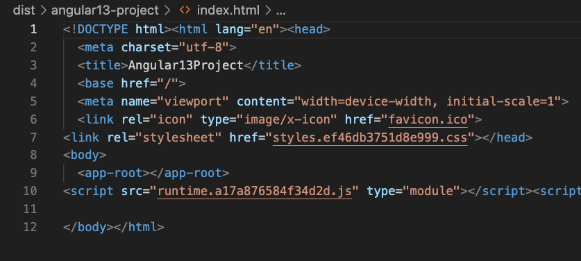

How to Create a specific version of Angular Project using CLI?
Other features
-
Updgrade rx.js to 7.4
-
Support TypeScript 4.4
-
Remove View engine and fully use Ivy (don't need ngcc)
-
Support Node Package Exports for the Angular Package Format (APF)
-
Remove differential loading (don't have to support IE11)

Reference